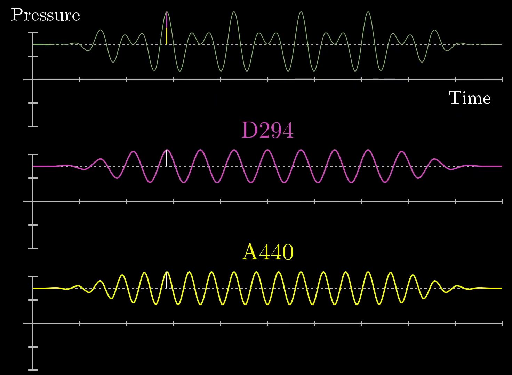

Notes:
- Some of the images definitely need (a), (b), (c) labels. I was trying to get something that looked mostly right before finishing them up
The video hops back and forth between sound examples. I think it's a good idea to have the examples, but I am not sure if it's best to hop back and forth.
It's probably good not to switch contexts to frequently, but I think intermingling examples with theory can help to strengthen an understanding of both.
I will embed the video, but I wasn't sure if we should put it at the top or the bottom.
Top please :)
Still need to finishing licensing section at the bottom.
A Visual Interpretation of Fourier Transforms
This right here is the visual you and I will build up to in this post:
Insert some kind of "winding machine" clip.
This represents the inner workings of an incredibly important tool for math, engineering, and most of science: The Fourier transform. While this post is aimed at being a friendly introduction, building up to a visual understanding that motivates the potentially-complicated-looking formula, my hope is that even those of you who are already somewhat familiar with Fourier Transforms will find it enriching to unpack what it is really doing.
Fourier transform of sound waves
Let's begin with a classic example, decomposing frequencies in sound waves.
Imagine you are listening to a pure A tone, which has the frequency of 440 beats per second. This means that if you were to measure the air pressure next to your ear over time, it would oscillate 440 times every second.

If you were to take a lower tone, like a D, it might oscillate slower at (for example) 294 beats per second. Playing both sounds at the same time without any external stimuli, the resulting pressure vs time graph would also oscillate around the ambient air pressure with time, but it would look more complicated than a simple sine wave. Its deviation from the ambient air pressure at any point in time would be the sum of what it would be with a pure A and what it would be with a pure D, like so:

I swapped the above image for the original, only because AD2.png wasn't showing for me. I think the image AD2 was mostly good, but it takes a moment to parse. That's probably more to do with what you had to work with from the original video still image. Maybe a video clip corresponding to the video from 1:22 to 1:48 would work better, perhaps with the yellow highlighted parts cut out, using AD2 as a thumbnail.
Here, we have drawn small white lines on the notes for A (bottom, yellow) and D (middle, pink) and shown that they create the final pressure vs time graph (top, green) when added together. When the two waves are increasing at the same time, the resulting waveform is high. Similarly, when the two waveforms are decreasing at the same time, we see that the resulting waveform is low. Still at other points, the two waves cancel each other out. All-in-all, the resulting waveform is not a pure sine wave, but instead something more complicated. If more notes are added, the waveform becomes even more complicated: (Make this paragraph an image caption)
Similarly, if we were to play more pure frequencies at the same time, the resulting waveform would be a sum of these sine waves, but even more complicated.


This is similar to the A or D frequencies mentioned in the previous section. If you were just given this graph, how could you recognize that it's oscillating at 3 beats per second? What operation could you perform that takes in this graph and spits out the number 3?
"That's a pretty dumb question," you might say, "just count the number of humps in a given second!" Fair enough, that works, but that won't help us at all once the signal has been added to others. So is there some other operation you could perform that detects the specialness of the number 3 here, but which has some hope of still detectingi that number 3 after the signal has been added to others?
To do this, we'll start by "wrapping it up" around a circle, like this.

Let's make this a video clip
You can think of the wound up graph on the bottom as being drawn by a little vector rotating at a steady rate with time. As it rotates, it's length is changing to match the height of the sine graph up top at the corresponding time.
For those of you comfortable with polar coordinates, what we're doing here is very similar to representing the original signal as a polar graph. However, we have an important extra parameter that we can tweak: How quickly is the vector rotating with time? In the visual above, it was rotating so as to make a complete cycle after 2 seconds. Since it's length was changing between short and long 3 times per second, this resulted in a shape that looks somewhat like a flower with 6 petals.
This is important, there are 2 different frequencies at play.
- The frequency of the original signal, 3 beats per second.
- The frequency that we are wrapping the sine wave along the circle, which at the moment is at 0.5 cycles per second.
If we set the vector rotating faster or slower, changing the "winding frequency", the resulting shape it traces out would be something different.

I actually think this image is probably fine if we remove the dotted lines completely. It might be best as a thumbnail to a video clip.
The key intuition here is that we are wrapping the signal around a circle, and depending on how tightly we wind the sine wave, we can find different patterns. So what happens when when the winding frequency is the same as the original signal's frequency? When our little vector rotates around the circle at 3 cycles per second? Well, we get the following plot:

Make this a thumbnail to a video clip.
Notice, the resulting curve it draws out is off-balance to the right. The rotating vector is always longer when it's pointing to the right, and shorter when it's pointed to the left, because the frequency with which its length changes is identical to the frequency with which it rotates around the circle.
Would we be able to use this information for our frequency unwinding machine? Well, we actually can!
First, let's imagine that the pattern was made of something with some weight, like a metal wire. Now put a dot at the center of mass location, and as we change the winding frequency, the center of mass will kind of wobble about. We'll revisit what we mean by "center of mass" here a bit further down, but for the moment we're looking for an intuitive way to measure how much this wound up graph is off-balance.
In most cases, the center of mass stays relatively close to the origin, but when the winding frequency is the same as the frequency for our signal, the center of mass is unusually far to the right. To keep track of this effect, let's draw the x-coordinate for the center of mass as the winding frequency changes.

Outstanding image
Here, we have taken 5 separate snapshots of the sine wave wound around the circle for winding frequencies of 0.2, 1.5, 3, 4, and 5 cycles per second. In each figure, we have plotted the center of mass as a red dot, and it is clear that the dot is furthest from the center of the plot with a winding frequency of 3 cycles per second. Away from that winding frequency, the center of mass location seems to wobble around the center of the plot.
Make into a caption
There is one small caveat: the center of mass seems to be a maximum distance from the center of the plot at a winding frequency of 0 cycles per second. What gives? Well, this is because we have started with a sine wave that oscillates between 0 and 2, and when the winding frequency is 0, the wire is just a straight line pointing to the right, meaning that the center of mass is halfway between 0 and 2, or 1. Really, that spike at 0 is measuring the fact that the average value of the graph as a whole is positive. If we centered the initial sine wave around 0, lettint it dip into negative values, there would be no spike above the winding frequency of 0.

The motive for using purely positive sine waves as our starting examples in this post is that negative values are a little weirder to think about as you wind up the graph. But the core logic stays the same in either case.
At this stage, we can call this plot tracking the center of mass of our wound up graph the "Almost Fourier Transform" of the original signal. It allows for us to pick out the frequency of the signal by seeing where the spike is. Next, suppose we take a different signal, like one with a lower frequency of 2 beats per second. We could do the same thing and find a peak at 2 cycles per second, as shown here:

The most interesting aspect of this machine is that it will allow us to decompose any arbitrary signals into it's constituent waveforms. To show this, let's combine the 2 and 3 frequency waves and do the same operation: tracking the center of mass coordinate and look for peaks in the winding frequency plot. This is shown below:

Add video clip
Here, we see 2 different frequencies at both 2 and 3 beats per second, which is exactly the same as the two "Almost Fourier Transformed" plots added together. Simply put, the sum of the two "Almost Fourier Transformed" signals is the same as the "Almost Fourier Transform" of the two summed together, as shown here:

The way a mathematician might phrase this is that our "Almost Fourier Transform" operation is linear. The curious among you may want to pause for a moment to reflect on why this is true. It ultimately stems from the fact that the x-coordinate of the sum of two vectors is the sum of their x-coordinates. This, by the way, is why we had it track the x-coordinate of the center of mass of the graph, rather than tracking its distance from the origin. For the full frequency information, you'd also want to keep track of the y-coordinate, but more on that below.
So this little mathematical machine does exactly what we wanted: it pulls out the constituent frequencies from a provided waveform, essentially unmixing a mixed bucket of paint. Before moving on to the mathematical formalism here, it is a good idea to discuss key application of this machine in sound editing, which is similar to the application we showed above with the Fourier transform of sound waves.
An example in sound editing
Let's imagine that you have a voice recording, but there is an annoying ringing sound in it that you want to get rid of. Remember that this signal will be received as a plot of intensity over time. Ideally, we would like to think of this signal in terms of frequencies, so we need to take the Fourier Transform of the signal to find the most prominent frequencies. From there, we will the annoying high-pitched ringing sound as a spike on the far right of the plot, as shown below:

I think as long as the progression is entirely vertical, this image will work fine.
If we remove the spike by smooshing it out on the frequency plot, we will have a sound that is almost identical to the recording, but without the ringing. To go back to the original signal, we need to use another concept known as the inverse Fourier transform, and after applying this operation, we have effectively removed the high-pitched ringing noise from the signal.
Note: this image needs a rework. I like that everything is on the same plot because it shows the concept for the full section in a single image, but maybe it's best to split it into two separate images and have the original signals faded behind the new ones?
So at this stage, we should get back to the heart of this post: what exactly is the mathematical formalism for a Fourier Transform?
Mathematical formalism of Fourier transform
Going back to the previous example of the "Almost Fourier Transform," the first thing one might criticize is the fact that the movement of the center of mass for our winding wire has both an and a component, but we are only plotting the -component! Let's attack that issue first.
In principle we could treat the center of mass as a 2d vector, however often in mathematics when rotation is involved, the formulas become notably more elegant when we represent 2d values as complex numbers. For this example, the center of mass would become complex number with both a real and imaginary part. Why bring in imaginary numbers? Well, Euler's formula is why.
Euler's formula famously tells us that if we were to take , where is some arbitrary number (like 2.0), and is the typical complex variable of , we will find ourselves on the point we would get by walking counter-clockwise units along a circle of radius 1 in the complex plane, as shown below:

Make into a video
If you are curious, I've made two multiple videos explaining why this is true, a quick one offering an explanation from the perspective of differential equations, a longer one offering a connection to group theory, and a longer one still targeted at someone just seeing it for the first time.
Once the scaffolding of the site is set up, replace these with links to the appropriate blog posts
Armed with Euler's formula, how might we describe rotating at a rate of cycles per second? Well, it would simply be:
Where is the full length of the circumference of the circle, is the desired frequency, and is a variable for time. This means that at any given time , we have progressed some amount along the circle. Ultimately, this gives us nice notation for describing how we might wind ourselves around a circle, but the convention for Fourier transforms is that we move in the clockwise (not counter-clockwise) direction, so it is more accurate to use with a negative sign.
If we were to take any signal and describe it as a function, like , then
will provide the function of at time and also the point along the circle . This is almost precisely the same as the winding machine we created before! Now we just need some sort of formula to capture the motion of the center of mass.
To approximate this, one might sample a large set of different times along the provided waveform, see where they end up on the wound-up graph, and take an average:
Pictorially, it would look like this:

Video option?
As we add more points, it becomes more accurate, and in the continuous limit, the sum becomes an integral:
Here, we still need to divide the equation based on the size of the time interval . Though this might seem intimidating, the whole expression is really just finding the center of mass of the wound-up graph.
Here it's worth adding some more clarity on what we mean by "center of mass". In the picture above, notice that that points are being sampled in a way that's evenly spaced across time, but this is not necessarily evenly spaced along the length of the graph. In effect, if we're thinking of the graph as a wire, the density of that wire is constant with respect to time, as if the rotating vector drawing it is outputting a constant amount of mass per unit time. But this implies the wire would be a little less dense in places where the graph's height changes rapidly. In principle, you could define a similar-but-distinct cousin of the Fourier transform by treating this "wire" with constant mass per unit of arc length, but the math would become less elegant. Is there a way for me to make this a footnote?
Great! Step-by-step, we have built up this kind of complicated, but, let's face it, surprisingly small expression for the whole winding machine idea that I talked about.
And now, there is only one final distinction to point out between this and the actual, honest-to-goodness Fourier transform. Namely, just don't divide out by the time interval.
The Fourier transform is just the integral part. What that means is that instead of looking at the center of mass, you would scale it up by some amount. If the portion of the original graph you were using spanned three seconds, you would multiply the center of mass by three. If it was spanning six seconds, you would multiply the center of mass by six.
Insert video clip
Physically, this has the effect that when a certain frequency persists for a long time, then the magnitude of the Fourier transform at that frequency is scaled up more and more.
For example, in the image below, we have a pure frequency of two beats per second, and it's being wound up at two cycles per second. In that case, no matter how long the duration of our signal, the center of mass stays roughly in the same spot, right? It's just tracing out the same shape.
Insert image
But what makes the honest-to-goodness Fourier Transform different from our "Almost Fourier Transform" is that the longer the signal persists, the larger the value of the Fourier transform, at that frequency.
For other winding frequencies, though, even even ones just barely different from 2, the effect of increasing the duration is canceled out by the fact that for longer time intervals, you're giving the wound up graph more of a chance to balance itself around the circle.
Insert image and/or video
Summary
That is...a lot of different moving parts, so let's step back and summarize what we have so far.
The Fourier transform of an intensity vs. time function, like , is a new function, which doesn't have time as an input, but instead takes in a frequency, what I've been calling "the winding frequency." In terms of notation, by the way, the common convention is to call this new function with a little circumflex on top of it.
Insert image showing example graph of and , something like the top half of 17:51
The output of this new function is a complex number, some point in the 2D plane, that corresponds to the strength of a given frequency in the original signal. The plot that I've been graphing for the Fourier transform is just the real component of that output, the x-coordinate.
But you could also graph the imaginary component separately, if you wanted a fuller description.
Insert image, say something like 18:01
And all of this is being encapsulated inside that formula that we built up.
Out of context, you can imagine how seeing this formula would seem sort of daunting. However, this expression carries with it a very rich, intuitive meaning once you know how to read each of its parts.
- The value describes a value with length 1, rotating at a constant rate so that it makes full cycles per unit time.
- multiplying that by the function means drawing a wound up version of the graph
- The integral can be interpreted in terms of the center of mass of the wound-up graph, scaled up by the size of the time interval.
Even still, I'm lying to you a little. But only a little. Even though in practice, with things like sound editing, you'll be integrating over a finite time interval, the theory of Fourier transforms is often phrased where the bounds of this integral are and .
Concretely, what that means is that you consider this expression for all possible finite time intervals, and you just ask, "What is its limit as that time interval grows to ?"
Insert video clip, say the one starting at 18:45
There is a lot more to say about this, but this will wrap up the discussion for now. Please let us know if there's anything else you would like to discuss!
License
Text
The text is based on a video by Grant Sanderson, adapted and expanded to the blog format by James Schloss and is licensed under the Creative Commons Attribution-ShareAlike 4.0 International License.
Images/Graphics
Image licenses should be attached to the relevant images.
- The image "A 440" was created by Grant Sanderson and James Schloss and is licensed under the Creative Commons Attribution-NonCommercial-ShareAlike 2.0 Generic (CC BY-NC-SA 2.0).